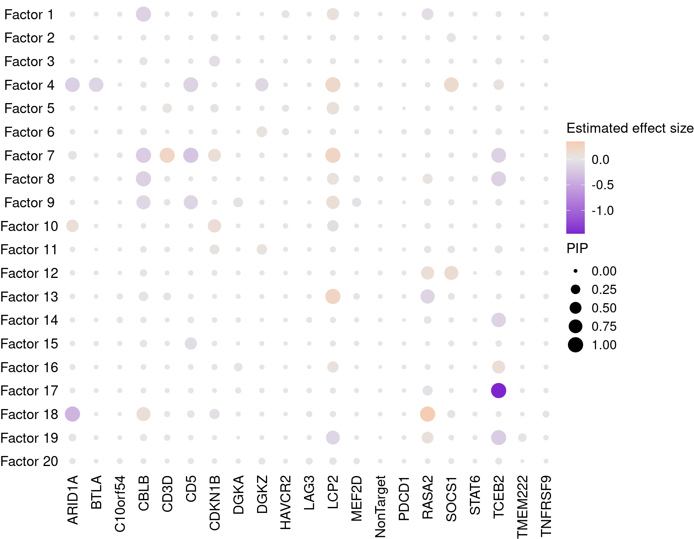
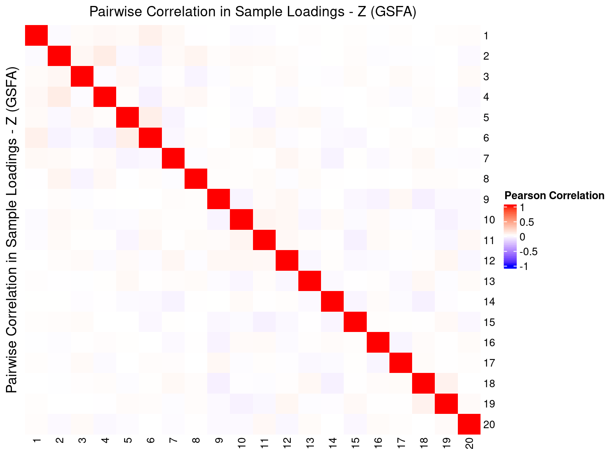
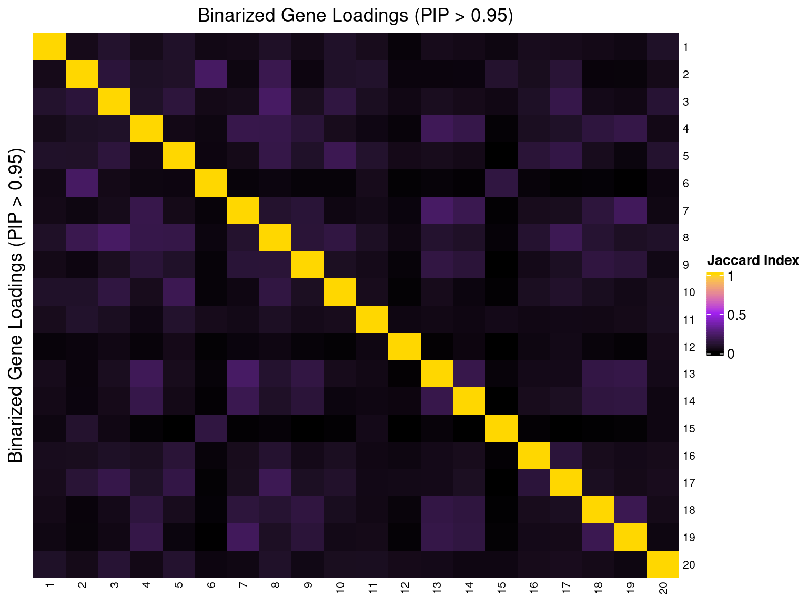

Guided Factor Analysis on Stimulated T Cell CROP-seq Data
-- 2 donors pooled, batch effect and 3 other covariates corrected
Yifan Zhou (zhouyf@uchicago.edu)
2021-09-22
1 Single cell expression data
Source:
Genome-wide CRISPR Screens in Primary Human T Cells Reveal Key Regulators of Immune Function, GEO accession: GSE119450.
Perturbations:
CRISPR knock-out of 20 genes (2 gRNAs per gene) + 8 non-targeting gRNAs. Guide conditions were defined on the target gene level; target genes were either found to regulate T cell responses in the genome-wide screens, or known checkpoint genes.
Guide RNAs were introduced into T cells through a novel procedure called sgRNA lentiviral infection with Cas9 protein electroporation (SLICE).
Cells:
Primary human CD8+ T cells from two healthy donors, with T cell receptor (TCR) stimulation.
Cells from 2 donors were pooled together into 1 analysis. All cells have only a single type of gRNA readout. Quality control resulted in 13983 cells.
Genes:
Top 6000 genes ranked by the multinomial deviance statistics were kept.
Normalization:
Deviance residual transformation.
Batch effect, unique UMI count, library size, and mitochondria percentage were all corrected for. The corrected and scaled expression data were used as input for subsequent factor analysis.
2 Guided results
Here, our "guide", \(G\) matrix, consists of 21 types (20 genes + negative control) of KO conditions across cells.
In each case, Gibbs sampling was conducted for 3000 iterations, and the posterior mean estimates were averaged over the last 1000 iterations.
2.1 SVD Initialization
2.1.1 Local False Sign Rate (LFSR)
For a given GSFA inference result, we can estimate the effect a certain KO condition \(m\) has on the expression of gene \(j\) by computing the LFSR of \(\beta_{m\cdot} \cdot W_{j\cdot}\).
Number of genes that passed GSFA LFSR < 0.05 under each perturbation:
Number of genes that passed t-test FDR < 0.05 under each perturbation:
2.1.2 Estimate of Factor ~ Perturbation Associations (\(\beta\))

2.1.3 Factor ~ KO Posterior Association

2.1.4 Beta PIP vs P-Value

2.1.5 Correlation btw Factors


2.2 Alternative Initializations and Chain Convergence
Other than initializing GSFA using truncated SVD, we also ran 2 chains with random initialization.
2.2.1 Chain mixing and convergence evaluation
| Min. | 1st Qu. | Median | Mean | 3rd Qu. | Max. | |
|---|---|---|---|---|---|---|
| ARID1A | 0.999 | 1.01 | 1.01 | 1.02 | 1.03 | 1.19 |
| BTLA | 0.999 | 1.00 | 1.01 | 1.02 | 1.02 | 1.40 |
| C10orf54 | 0.999 | 1.00 | 1.00 | 1.00 | 1.00 | 1.01 |
| CBLB | 0.999 | 1.01 | 1.03 | 1.05 | 1.06 | 1.53 |
| CD3D | 0.999 | 1.02 | 1.05 | 1.09 | 1.12 | 1.89 |
| CD5 | 0.999 | 1.01 | 1.03 | 1.04 | 1.05 | 1.63 |
| CDKN1B | 0.999 | 1.01 | 1.02 | 1.03 | 1.04 | 1.22 |
| DGKA | 0.999 | 1.00 | 1.01 | 1.01 | 1.02 | 1.05 |
| DGKZ | 0.999 | 1.00 | 1.00 | 1.01 | 1.01 | 1.29 |
| HAVCR2 | 0.999 | 1.01 | 1.01 | 1.02 | 1.03 | 1.10 |
| LAG3 | 0.999 | 1.00 | 1.00 | 1.00 | 1.00 | 1.01 |
| LCP2 | 0.999 | 1.01 | 1.02 | 1.03 | 1.03 | 1.25 |
| MEF2D | 0.999 | 1.00 | 1.01 | 1.01 | 1.01 | 1.05 |
| NonTarget | 0.999 | 1.00 | 1.00 | 1.00 | 1.00 | 1.01 |
| PDCD1 | 0.999 | 1.00 | 1.00 | 1.00 | 1.00 | 1.00 |
| RASA2 | 0.999 | 1.01 | 1.01 | 1.03 | 1.03 | 1.67 |
| SOCS1 | 0.999 | 1.01 | 1.02 | 1.02 | 1.03 | 1.22 |
| STAT6 | 0.999 | 1.00 | 1.00 | 1.00 | 1.01 | 1.02 |
| TCEB2 | 0.999 | 1.00 | 1.01 | 1.02 | 1.02 | 1.30 |
| TMEM222 | 0.999 | 1.00 | 1.00 | 1.01 | 1.01 | 1.05 |
| TNFRSF9 | 0.999 | 1.00 | 1.00 | 1.00 | 1.00 | 1.01 |
| offset | 0.999 | 1.00 | 1.01 | 1.02 | 1.02 | 1.87 |
2.2.2 Difference btw methods in factor estimation
For a pair of \(Z\) estimations from 2 inference methods, \(Z_1, Z_2\), we quantify the pairwise estimation difference as \(||Z_1Z_1^T - Z_2Z_2^T||_F/N\), where \(||\cdot||\) is the Frobenius norm of a matrix, and \(N\) is the number of rows (samples) in \(Z\).
Guided SVD vs Rand_01: 0.255
Guided SVD vs Rand_02: 0.265
Rand_01 vs Rand_02: 0.276
3 Gene Ontology Enrichment Analysis by Factor
Target genes: Genes w/ non-zero loadings in each factor (PIP cutoff at 0.95);
Backgroud genes: all 6000 genes used in factor analysis;
Statistical test: hypergeometric test (over-representation test);
Only GO terms/pathways that satisfy fold change \(\geq\) 2 and test FDR \(<\) 0.05 are shown below.
3.1 GO Slim Over-Representation Analysis
Gene sets: Gene ontology "Biological Process" (non-redundant).
Factor 1 : 20 significant GO terms
| Factor 2 : 54 significant GO terms |
|---|
| Factor 3 : 30 significant GO terms |
Factor 4 : 101 significant GO terms
| Factor 5 : 17 significant GO terms |
|---|
| Factor 6 : 56 significant GO terms |
Factor 7 : 87 significant GO terms
| Factor 8 : 38 significant GO terms |
|---|
| Factor 9 : 54 significant GO terms |
Factor 10 : 14 significant GO terms
| Factor 13 : 90 significant GO terms |
|---|
| Factor 14 : 77 significant GO terms |
Factor 15 : 38 significant GO terms
| Factor 16 : 26 significant GO terms |
|---|
| Factor 17 : 36 significant GO terms |
Factor 18 : 51 significant GO terms
| Factor 19 : 145 significant GO terms |
|---|
| Factor 20 : 31 significant GO terms |
| Factor | 1 | 2 | 3 | 4 | 5 | 6 | 7 | 8 | 9 | 10 | 11 | 12 | 13 | 14 | 15 | 16 | 17 | 18 | 19 | 20 |
| Signif_GO_terms | 20 | 54 | 30 | 101 | 17 | 56 | 87 | 38 | 54 | 14 | 0 | 0 | 90 | 77 | 38 | 26 | 36 | 51 | 145 | 31 |
3.1.1 Factors of interest
2: meiotic cell cycle, cytokinesis, chromosome segregation, cell cycle G2/M phase transition
3: response to interleukin, cell killing
4: interleukin production, cell killing
6: DNA damage response, regulation of cell division
7: immune response, interleukin production, response to chemokine, cell killing
8: leukocyte migration/proliferation
9: response to chemokine, immune response, leukocyte proliferation, cell killing, T cell activation
11: immune response, interleukin production, leukocyte migration, T cell activation
12: DNA conformation change, DNA replication
13: interleukin production, cell killing, leukocyte migration
14: interleukin production, leukocyte cell-cell adhesion
15: cell cycle checkpoint
18: response to chemokine, leukocyte migration, T cell activation, regulation of hemopoiesis
19: response to chemokine, type 2 immune response, interleukin production, leukocyte migration, leukocyte proliferation, cell killing, T & B cell activation
From the reference study:
Targeting CD5, RASA2, SOCS1, and CBLB promoted programs that are characterized by the induction of markers of activation states (e.g. IL2RA, TNFRSF18/GITR), cell cycle genes (e.g. MKI67, UBE2S, CENPF and TOP2A), and effector molecules (e.g GZMB).
Associated factors in GSFA:
CD5: 4, 7, 9
RASA2: 13, 18
SOCS1: 4, 12
CBLB: 1, 7, 8, 9, 18
From the reference study:
Targeting CD3D or LCP2 inhibited the cluster 10 activation program and promoted programs characterized by expression of resting state markers such as IL7R and CCR7.
Associated factors in GSFA
CD3D: 7
LCP2: 4, 7, 13, 19
3.2 Reactome Pathway Over-Representation Analysis
Gene sets: The Reactome pathway database.
Factor 1 : 44 significant Reactome pathways
| Factor 2 : 151 significant Reactome pathways |
|---|
| Factor 3 : 223 significant Reactome pathways |
Factor 4 : 59 significant Reactome pathways
| Factor 5 : 46 significant Reactome pathways |
|---|
| Factor 6 : 131 significant Reactome pathways |
Factor 7 : 12 significant Reactome pathways
| Factor 8 : 76 significant Reactome pathways |
|---|
| Factor 9 : 23 significant Reactome pathways |
Factor 10 : 44 significant Reactome pathways
| Factor 11 : 19 significant Reactome pathways |
|---|
| Factor 13 : 24 significant Reactome pathways |
Factor 14 : 24 significant Reactome pathways
| Factor 15 : 87 significant Reactome pathways |
|---|
| Factor 16 : 35 significant Reactome pathways |
Factor 17 : 40 significant Reactome pathways
| Factor 18 : 39 significant Reactome pathways |
|---|
| Factor 19 : 19 significant Reactome pathways |
Factor 20 : 85 significant Reactome pathways
| Factor | 1 | 2 | 3 | 4 | 5 | 6 | 7 | 8 | 9 | 10 | 11 | 12 | 13 | 14 | 15 | 16 | 17 | 18 | 19 | 20 |
| Signif_GO_terms | 44 | 151 | 223 | 59 | 46 | 131 | 12 | 76 | 23 | 44 | 19 | 0 | 24 | 24 | 87 | 35 | 40 | 39 | 19 | 85 |
4 Gene Set Enrichment Analysis by Perturbation
Target genes: Genes w/ LFSR < 0.05 under each perturbation marker gene;
Backgroud genes: all 6000 genes used in factor analysis;
Statistical test: hypergeometric test (over-representation test);
Only GO terms/pathways that satisfy fold change \(\geq\) 2 and test FDR \(<\) 0.05 are shown below.
4.1 GO Slim Over-Representation Analysis
Gene sets: Gene ontology "Biological Process" (non-redundant).
ARID1A : 48 significant GO terms
| CBLB : 46 significant GO terms |
|---|
| CD3D : 86 significant GO terms |
CD5 : 74 significant GO terms
| LCP2 : 132 significant GO terms |
|---|
| RASA2 : 46 significant GO terms |
TCEB2 : 79 significant GO terms
| Marker | ARID1A | CBLB | CD3D | CD5 | LCP2 | RASA2 | TCEB2 |
| Signif_GO_terms | 48 | 46 | 86 | 74 | 132 | 46 | 79 |
4.2 Reactome Pathway Over-Representation Analysis
Gene sets: The Reactome pathway database.
ARID1A : 43 significant Reactome pathways
| CBLB : 54 significant Reactome pathways |
|---|
| CD3D : 14 significant Reactome pathways |
CD5 : 12 significant Reactome pathways
| LCP2 : 62 significant Reactome pathways |
|---|
| RASA2 : 42 significant Reactome pathways |
TCEB2 : 56 significant Reactome pathways
| Marker | ARID1A | CBLB | CD3D | CD5 | LCP2 | RASA2 | TCEB2 |
| Signif_GO_terms | 43 | 54 | 14 | 12 | 62 | 42 | 56 |